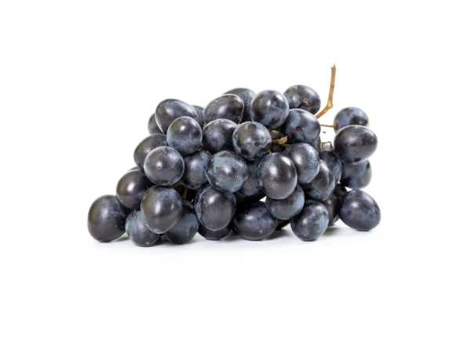

Vitis vinifera
Common Names: Black Grape, Dark Grape, Wine Grape
Local Name: Karuppu Thirakshai (Tamil), Kala Angoor (Hindi)
Family: Vitaceae
Origin: Mediterranean, Central Asia
Plant Type: Perennial deciduous woody vine
Average Lifespan: 50–100 years
| Growth Habit | Vigorous climbing vine with tendrils; needs trellis support |
| Plant Size | Vine length 3–10 meters; trained to 1–2 meters on trellis |
| Leaves | Palmate, 5-lobed, 10–20 cm; serrated margins; deciduous |
| Flowers | Small, greenish, fragrant; in dense panicles |
| Fruit | Round to oval berries, 1–2 cm; in clusters of 15–300 berries |
| Fruit Color | Deep purple to black when ripe; rich in anthocyanins |
| Seed Characteristics | 1–4 seeds per berry; some seedless varieties available |
| Root System | Deep, extensive root system; drought-tolerant once established |
| Climate | Mediterranean to subtropical; needs dry summer and cool winter |
| Temperature Range | 15–35°C; needs winter chilling for dormancy |
| Rainfall Requirement | 500–800 mm; dry during ripening preferred |
| Soil Type | Well-drained sandy loam; tolerates poor soils |
| Soil pH Preference | 5.5–7.0 |
| Sun Requirement | Full sun (8+ hours) |
| Spacing | 2–3 meters between vines; rows 2.5–3 meters apart |
| Water Requirement | Moderate; reduce during ripening for better sugar concentration |
| Can it Grow in Pots? | Yes, in large containers with trellis; dwarf varieties preferred |
| Fertilizer Schedule | Pre-flowering and post-harvest; potassium important for fruit quality |
| Recommended Organic Fertilizers | Compost, bone meal, wood ash, vermicompost |
| Pruning Time | Winter dormancy (December–January in India); hard pruning essential |
| How to Prune | Spur or cane pruning; retain 2–3 buds per spur |
| Common Pests | Mealybug, thrips, grape berry moth |
| Common Diseases | Powdery mildew, downy mildew, anthracnose, botrytis |
| Flowering Months | February–March (India); after pruning |
| Fruiting Season | May–June; 90–110 days after flowering |
| Average Yield per Plant | 10–20 kg per vine (mature) |
| Pollination Type | Self-fertile; wind-pollinated |
| Propagation by Cuttings | Hardwood cuttings during dormancy; root in 3–4 weeks |
| Propagation by Grafting | Grafted on phylloxera-resistant rootstock for commercial production |
| Calories | 69 kcal per 100g |
| Dietary Fiber | 0.9 g per 100g |
| Vitamin C | 10.8 mg per 100g |
| Potassium | 191 mg per 100g |
| Antioxidants | Rich in resveratrol, anthocyanins, quercetin |
Add your field observations here.